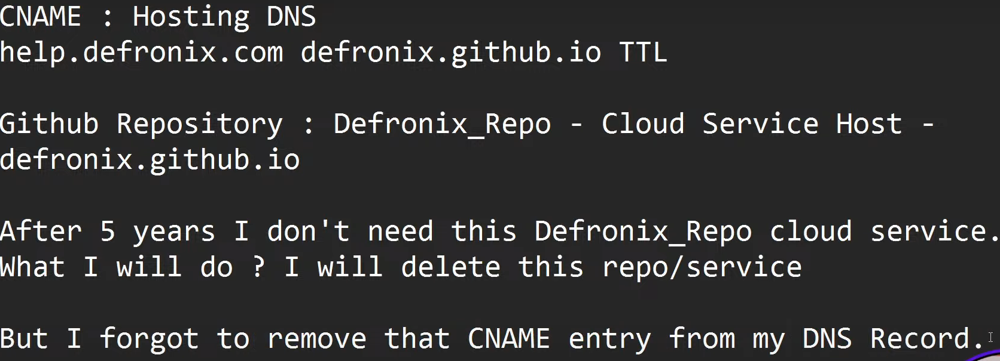

can-i-takeover-xyz github - lists all services that are vulnerable to subdomain takeover -
List of specific sub-domains seen as CNAMEs · Issue #26 · EdOverflow/can-i-take-over-xyz (github.com)
,
EdOverflow/can-i-take-over-xyz: Can I take over XYZ? — a list of services and how to claim (sub)domains with dangling DNS records. (github.com)
to check cname record of a domain -
dig subdomain.domain.com - nslookup subdomain.domain.com
Semrush | Report #294201 - subdomain takeover at news-static.semrush.com | HackerOne
- Read this report for more Inforrmation
tools to find subdomain takeover:-
subzy github
subjack github
subover github (discontinued)
Nuclei (BEST) - -
nuclei -l subdomain.txt -t /path-to-template-folder -v -
(nuclei path is .local)
nuclei uses various templates to run.
we can use subdomain takeover template -
nuclei-templates/subdomain-takeover/detect-all-takeovers.yaml at 8b2bc8ab8ef801d4342bb4ec4fedb5460296da29 · projectdiscovery/nuclei-templates (github.com)